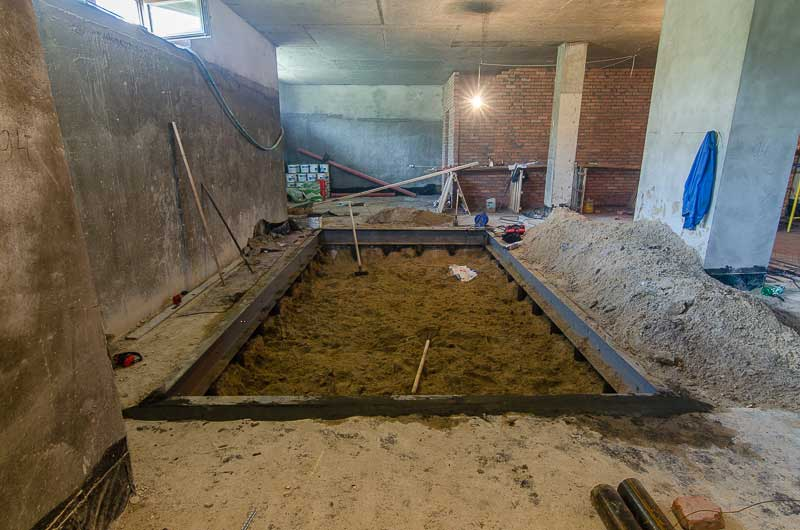
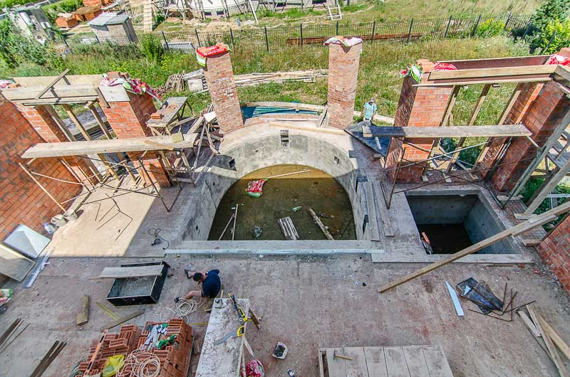
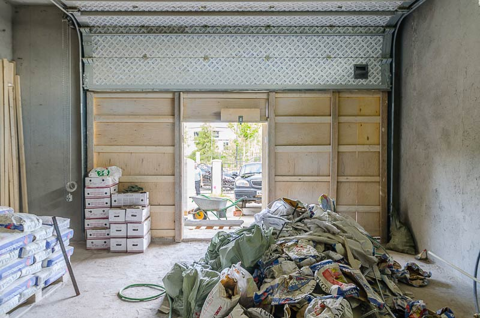
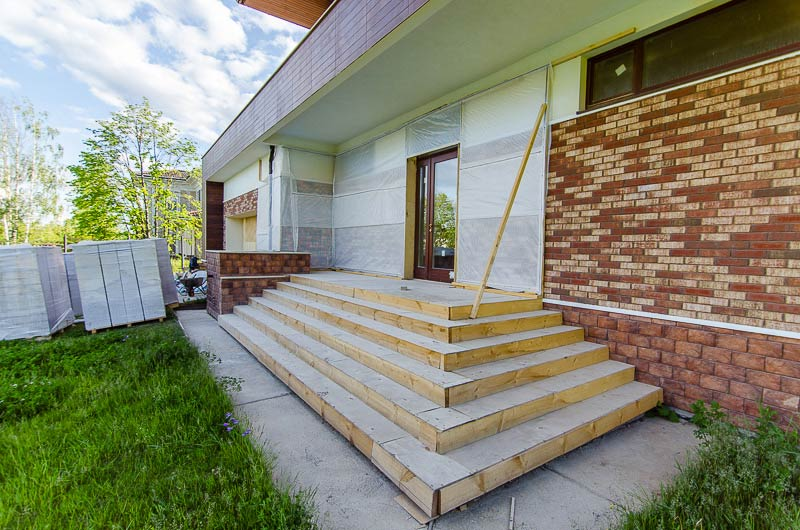
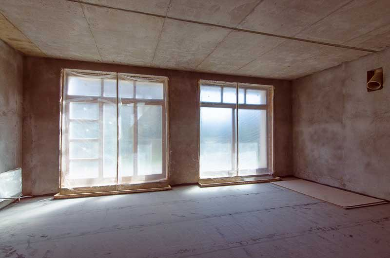

Что вы получаете, заказывая ремонт у нас?

На этапе тендера мне каждый раз задают один и тот же вопрос:
«Насколько экономически обоснована та цена, за которую вы продаёте свои услуги?»Формулировка вопроса разная, но смысл один – люди хотят знать, что они получат за свои деньги, заказав ремонт у нас.
Я постараюсь ответить на этот вопрос без «воды» и привести в пример реальные преимущества, которые вы получаете, обращаясь к нам.
Профильная структура
В структуре нашей компании есть 5 профильных подразделений по следующим направлениям: общестроительные работы, черновая отделка, инженерные системы, чистовая отделка и ландшафтные работы. В каждом подразделении свой руководитель и свои бригады.
Опыт показывает, что черновые отделочники патологически не могут качественно делать чистовые работы, равно как строители не могут заниматься ландшафтными работами. Казалось бы, что там такого – вчера человек штукатурил дом, а сегодня кладет там плитку. Практика показывает следующее: черновые рабочие делают быстро и много, а если их посадить класть плитку (где требуется усидчивость и аккуратность), то ничего хорошего из этого не выйдет.
Мы долго шли к тому, чтобы создать структуру из профильных бригад по каждому направлению, и сейчас мы можем с уверенностью сказать, что реально к этому пришли.
Генподряд
Генподряд – это единый центр ответственности за все виды работ на вашем объекте. Это ваша гарантия того, что процесс ремонта вы отдаёте в одни руки, и вам не придется по ходу ремонта впрягаться и решать вопросы, в которых у вас нет компетенции.
У меня в команде на постоянной основе работают около 40 человек, а под проекты я могу привлекать еще столько же. На практике это означает, что какие бы работы вы не планировали делать, скорее всего у меня в команде есть люди с реальным опытом в этом вопросе, и вам не придется привлекать сторонних специалистов. А ещё это означает, что, если вдруг что-то пойдёт не так (это стройка, бывает всякое), вам не придётся искать концы и разбираться, по чьей вине это произошло. Генподрядчик один – решать вопрос ему, и все риски несёт он.
Реальные объекты в работе
Все наши объекты находятся в элитных посёлках на Новорижском шоссе: Миллениум, Монтевиль, Парк Авеню, Мэдисон парк – в каждом из них мы работаем в данный момент и реально можем показать ход выполнения ремонта на любом из них. У нас есть огромный опыт не просто в ремонте, а в выполнении полного комплекса работа на самых «топовых» объектах. А это намного больше, чем просто уметь качественно делать ремонт. Когда работаешь в домах площадью больше 1000 кв.м, сложность проектов и требования заказчиков столь высоки, что приходится сталкиваться с вопросами, которые в других случаях никогда бы не возникли.
Наличие значительного опыта работы на сложных объектах позволяет делать две вещи:
- Предвидеть проблемы, о которых строители без такого опыта даже не слышали;
- Предлагать технические решения, которые другие сделать не могут;
Примеры из жизни к этим пунктам ниже.
Особые виды работ
Мы можем своими силами выполнять очень разные и специфические виды работ.
- Строительство пристройки для гаража или бассейна;
- Монтаж бассейна на цокольном этаже (делается проём в плите фундамента и в нее заливается чаша);
- Переоборудование чердака в полноценный жилой мансардный этаж (нагрузочный расчет, замена опор, утепление и гидроизоляция крыши);
Далеко не каждый подрядчик возьмется делать эти виды работ, и уж тем более не будет усложнять себе жизнь, намекая на саму возможность их проведения. Мы имеем опыт воплощения в жизнь очень разноплановых и сложных архитектурных решений, поэтому спектр предлагаемых нами идей существенно шире, чем вы получите в среднем по рынку.

Строительство бассейна на цокольном этаже

Строительство пристройки с бассейном
Качество работы
Есть множество технологических нюансов, которые не прописаны ни в каких ГОСТах и СНиПах, но их соблюдение позволяет повысить качество результата.
Приведу самый очевидный пример.
- В процессе ремонта через крыльцо проходит весь материал, оборудование (которое не всегда габаритное) и много чего еще. Проще говоря, крыльцо подвергается повышенному износу, и, если ничего специально не сделать, то к концу ремонта оно всегда приходит в «подубитое» состояние.
- То же касается гаража: в период ремонта там обычно хранится материал. Но за время ремонта ворота приходится открывать и закрывать столько раз, что к его завершению механизм ворот уже заметно изношен.
- На оконные механизмы в процессе черновых работ оседает много пыли и грязи, не говоря уже о том, что подоконники могут испачкать штукатуркой или ещё чем-то.
Поэтому на наших объектах еще до начала работ мы всегда делаем следующее:
- Если у дома крыльцо в плитке, то мы всегда укрываем его фанерой;
- В гараж мы монтируем временную дверь, чтобы не открывать ворота в процессе ремонта;
- Все окна вместе с подоконниками на период черновой отделки мы закрываем полиэтиленом, чтобы туда не попадала грязь и не было соблазна поставить что-нибудь пачкающееся на подоконник.
Это выглядит достаточно очевидно, и кажется, что так может сделать любая строительная бригада, если ее об этом попросить. Но пройдитесь по посёлку и посмотрите, многие ли реально так делают?
В примере я привёл только самую вершину айсберга. Разумеется, есть целая масса других «граблей», о которых мы уже знаем и поможем вам их избежать. Понимание этих тонкостей приходит с опытом, который вы получаете, обращаясь к нам.

Временная дверь в гараже

Укрытие парадной лестницы фанерой на период ремонта

Укрытие оконных механизмов и подоконников